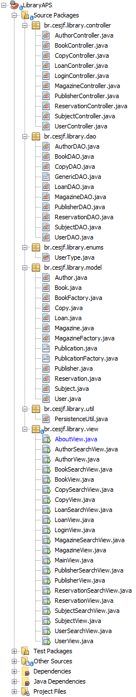

MVC
O MVC é utilizado em muitos projetos devido à arquitetura que possui, o que possibilita a divisão do projeto em camadas muito bem definidas. Cada uma delas, o Model, o Controller e a View, executa o que lhe é definido e nada mais do que isso.
No nosso projeto utilizamos a arquitetura do MVC, conforme abaixo:
